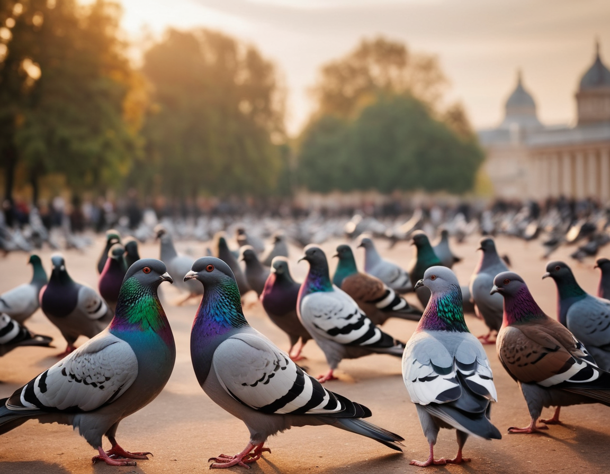
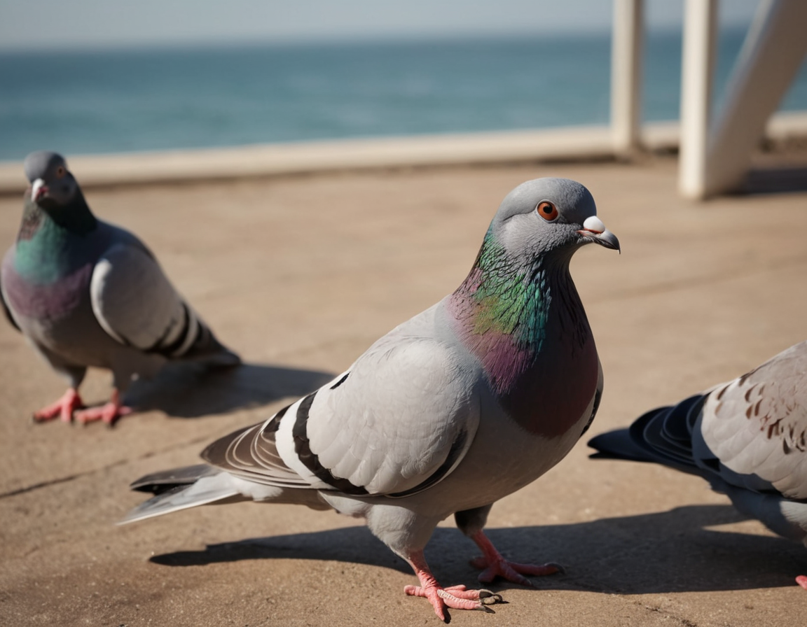

|  | 2023-12-15_15-37-23_7946.png Prompt: create some pigeons Negative Prompt: Fooocus V2 Expansion: create some pigeons, colorful, cute, joyful, background light, crisp, focus, cinematic, highly detailed, advanced, deep color, intricate, elegant, epic composition, magical atmosphere, pure glowing, very inspirational,, bright colors, inspired, rich clear fancy, professional, artistic, new, great creative, positive, wonderful, unique, attractive, cool, friendly Styles: ['Fooocus V2', 'Fooocus Enhance', 'Fooocus Sharp', 'Fooocus Photograph'], Performance: Speed Resolution: (1152, 896), Sharpness: 2 Guidance Scale: 4, ADM Guidance: (1.5, 0.8, 0.3) Base Model: juggernautXL_version6Rundiffusion.safetensors, Refiner Model: None Refiner Switch: 0.5, Sampler: dpmpp_2m_sde_gpu Scheduler: karras, Seed: 7731455863284065683 LoRA [sd_xl_offset_example-lora_1.0.safetensors] weight: 0.1, |
|  | 2023-12-15_15-31-38_5199.png Prompt: create some pigeons Negative Prompt: Fooocus V2 Expansion: create some pigeons, cool colors, dramatic, background composed composition, dynamic light, atmosphere, detailed, intricate, shiny, strong, full color, cinematic, awesome, sharp focus, highly detail, futuristic, still, sunny, open, new, brave, colorful, passionate, confident, hopeful, inspired, vibrant, illuminated, infinite, lovely, determined, amazing, loving Styles: ['Fooocus V2', 'Fooocus Enhance', 'Fooocus Sharp', 'Fooocus Photograph'], Performance: Speed Resolution: (1152, 896), Sharpness: 2 Guidance Scale: 4, ADM Guidance: (1.5, 0.8, 0.3) Base Model: juggernautXL_version6Rundiffusion.safetensors, Refiner Model: None Refiner Switch: 0.5, Sampler: dpmpp_2m_sde_gpu Scheduler: karras, Seed: 7731455863284065682 LoRA [sd_xl_offset_example-lora_1.0.safetensors] weight: 0.1, |
Fooocus Log 2023-12-15 (private)
All images do not contain any hidden data.